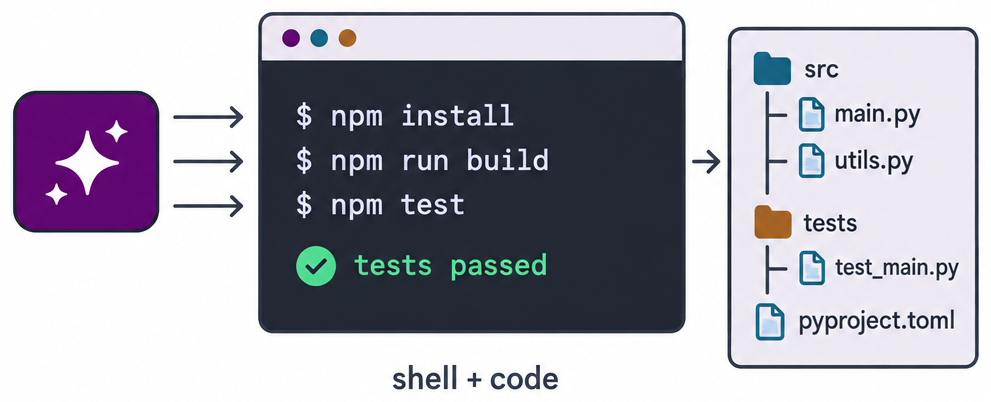
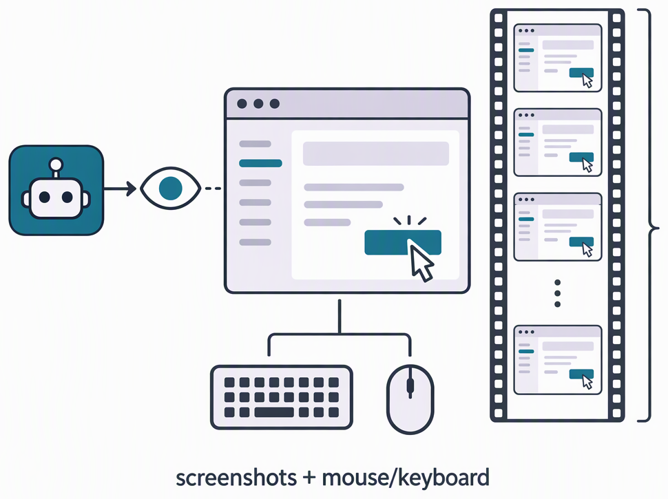
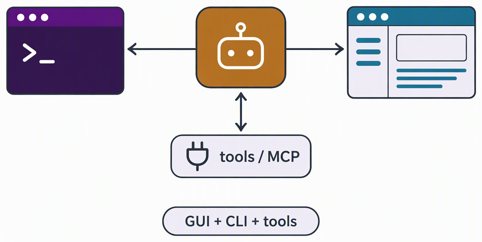
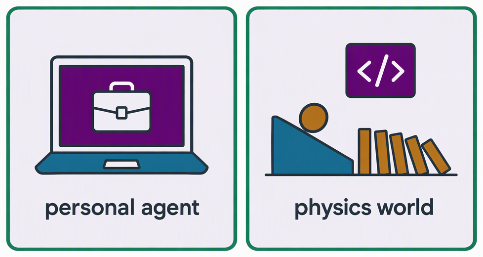

二、国内外研究现状
□ 通用数字智能体方法：三类方法 + 一个新前沿
纯 CLI 能力方法
Terminal-Bench · SWE-agent · OpenClaw

优点 动作精确高效，状态可直接读取；单元测试提供验证信号，强化学习已较成熟
不足 难以直接观测渲染结果；主要覆盖具备命令行或 API 的软件
纯 GUI 能力方法
OSWorld · UI-TARS-2 · FastV · SnapKV

优点 截图 + 键鼠为通用接口，适用软件范围广；OSWorld 公开成绩约 12% → 80%+
不足 截图累积致开销高、步数多；通用压缩未利用 GUI 结构；缺少低成本验证信号
混合能力方法
CoAct-1 · OSWorld-MCP · GUI-Genesis

优点 混合动作空间缩短轨迹；以参考应用为验证参照构建可验证环境
不足 OSWorld-MCP / MCPWorld 中第二种接口增益仅 3.2 / 4.5 个百分点，多依据结果判分；可验证环境局限于单一界面
新前沿：走向真实世界
dots · Muse · OpenClaw · SimWorlds · RobotWorld

优点 个人智能体具备记忆与跨应用执行；代码智能体已能生成物理仿真与机器人程序
不足 多在云端通用环境执行，对职业环境支持有限；主要评估原始条件下的生成结果，跨条件物理验证不足
共同缺口：缺少统一范式与过程可信的评测、可验证的混合训练环境，以及面向真实世界的落地验证